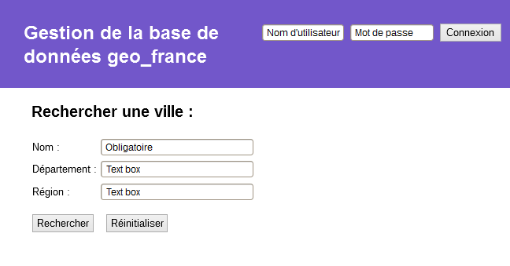
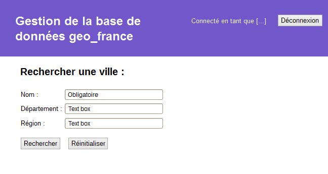

Le site permettra à tous les utilisateurs de rechercher et afficher les informations d'une ville.
Pour cela, un formulaire sur la page d'accueil lui permettra d'indiquer le nom d'une ville ainsi
que le département et/ou la région où elle se situe. La description de la ville, ou la liste des
villes, sera affichée en dessous du formulaire après l'envoi.
Si il n'y a qu'une seule ville correspondant au critères de recherche, toutes ses informations
présentes dans la base de données parmi celles-ci seront affichées :
Si plusieurs villes correspondent aux critères demandés, la liste des villes sera affichée sous forme de liens, avec leur nom et leur département.
Le site doit également permettre aux utilisateurs inscrits de modifier certaines informations dans la base de données. Les informations pouvant être mises à jour dépendent du type de profil de l'utilisateur :
Un formulaire sur la page d'accueil doit permettre aux utilisateurs de s'authentifier avec un nom d'utilisateur et un mot de passe. Si l'utilisateur est connecté, un lien pour modifier les informations de la ville sélectionnée sera ajouté lors de l'affichage de celle-ci.
La page de maintenance affichera un formulaire contenant les données mofifiables de la ville.
Page d'accueil :
 Base de données MongoDB existante : geo_france
Formulaire de connexion utilisant la méthode post.
Champs :
Après un clic sur connexion, une requêtre sera envoyée à la base de données pour récupérer
le document de la collection users correspondant exactement à ce nom et ce mot de passe.
Le nom d'utilisateur et son type de profil seront stockés dans la session en cours.
Si aucune correspondance n'est trouvée, un message d'erreur sera affiché.